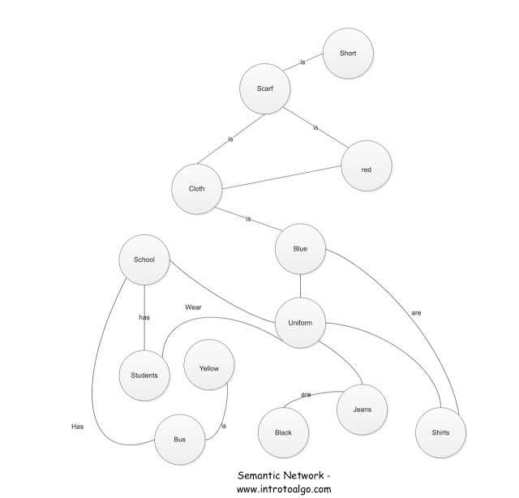

A semantic network (also called a concept network or frame network) represents knowledge as a graph where nodes represent ideas or concepts and edges represent the relationships between them. It became easier to visualize and reason about data by laying out these connections explicitly.
Semantic networks can be directed or undirected, depending on whether the relationship has a specific direction. Beyond knowledge representation, they also serve as the foundation for expert systems.

A simple semantic network linking related conceptsExponential Growth Property
Semantic networks have a distinctive structural property: they grow exponentially. Each node can relate to many other nodes. Each of those nodes relates to many more. The number of possible connections scales very quickly as the network expands, making the structure both powerful and computationally demanding at scale.
This property is part of what makes semantic networks both expressive and challenging — the richer the knowledge, the denser the graph, and the more complex the reasoning required to traverse it.
Back to Blog